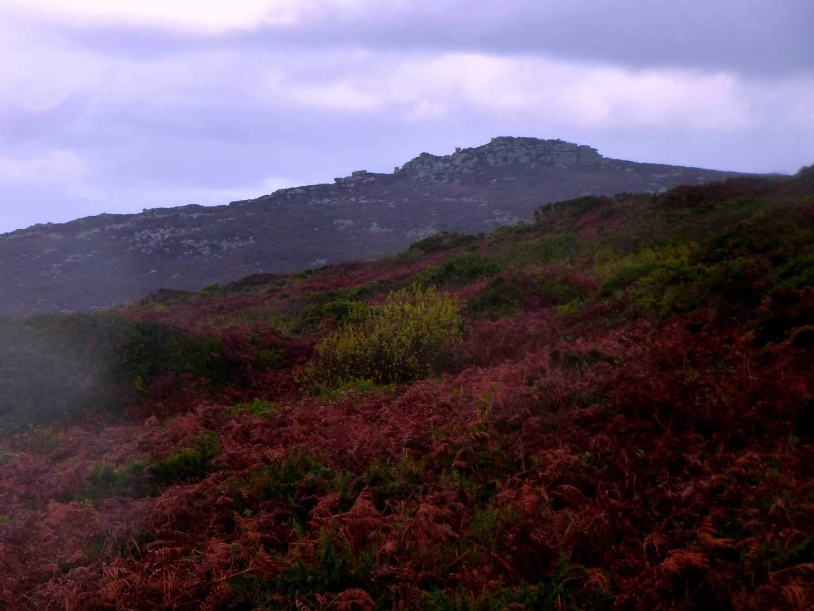
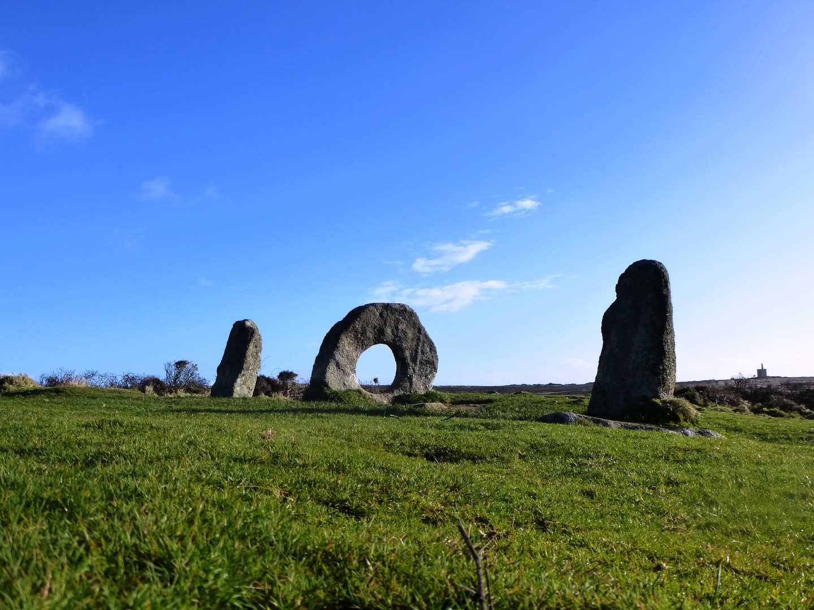

Start Ref: 4210 3641
End Ref: 4210 3641
Distance: 4 miles
Time: 2.5hrs
For this walk, I tend to leave the car in the little National Trust pull in on the B3306, midway between Treen and Morvah, by the remains of the Carn Galver Tin Stack. Walking down the road (westerly - towards Morvah) for a short distance there is a swinging foot gate on the southern side of the road which will lead us onto the moorland.
From here there is a wide track which leads us up between the two hills of Carn Galver and Watch Croft. Following the path can be slippy and is steep in places, but as we near the top it flattens out and we are greeted with lovely views out over the sea. On our left is Carn Galver, and this is an easy walk through the heather and bracken to stand atop this impressive outcrop (and to stop for a flask of tea and a bit of saffron). Once we have taken in the views, we return to the path and continue to head in a southerly direction keeping the fencing on our right. After about a quarter of a mile this will bring us level to a fielded area with public access spots. If we feel so inclined this is a wonderful and historic area to walk around, with ponds for Herons, and Old Well and buildings. If we do explore, or not, the path we are taking follows down through the gate and follows a wide grassy track until a sharp right (west) turn. Again here we have an option. Either walk out further on to the mine and take in the Nine Maidens Stone Circle and Ding Dong Mine (following tracks made by animals), or follow the path (as I am doing) to the right, then left and follow on in a southerly direction until we reach a little wooden sign over a little stream that leads to the Men-an-Tol. Take time to visit - everyone should visit this at least once. As a Celt, I find this spot very atmospheric and I would never be surprised to see the Pobel Vean here.
Back to the path, turn left and follow the path for the mile to the road, where we need to turn right (North West) and follow until we can again turn right up a little track that is a Bridleway (ignore the Private sign). We follow this bridleway North and now start to head back towards Watch Croft, passing by a farmhouse on our left, and then what has to be the most impressive viewed house in Cornwall. Now the path starts to drop back down towards our starting spot, however, this is very steep. So steep that the path zig-zags its way down (and also the reason I do this walk this way around as I do not want to have to walk up this - although I have passed crazy fools running it!). This path eventually brings us back down on to the road, where we now turn right (East) and follow the road along until suddenly we round a corner and there is the Tin Stack under which we parked.
I hope that you enjoy.